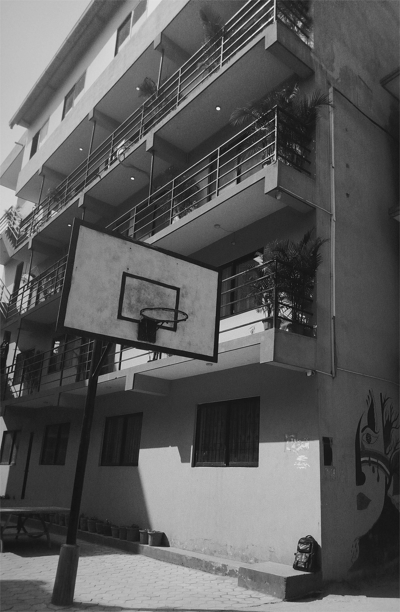

~Ruby
Listening to the music, walking on the paths, realising and filtering all those untimely thoughts of mine. Yes, this is me coming back from college.
When life becomes harsh on me, I start asking myself should I have to live it or just existing is enough?
Sometimes, I feel like I've no purpose of living, I don't know what is going on around me, I just gaze into my thoughts so deeply that I don't see anyone, hear anyone, can't feel the presence of anyone.
It becomes even harder when you realise all those nights with a heavy heart, those days with tired eyes, a restless body. All those silences, those tears, those heartaches came from a reason that can't be explained, can't be determined and can't be consoled.
Life is hard to live with those unsaid thoughts, suppressed feelings and the burden of those emotions which can't be shared or talked to anyone.